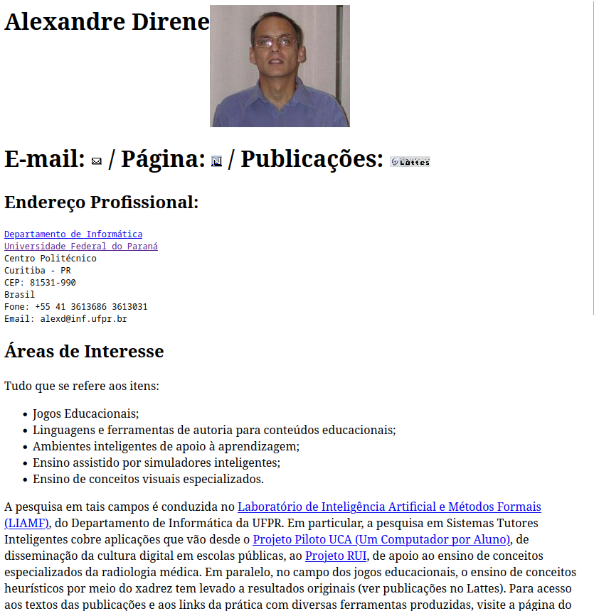
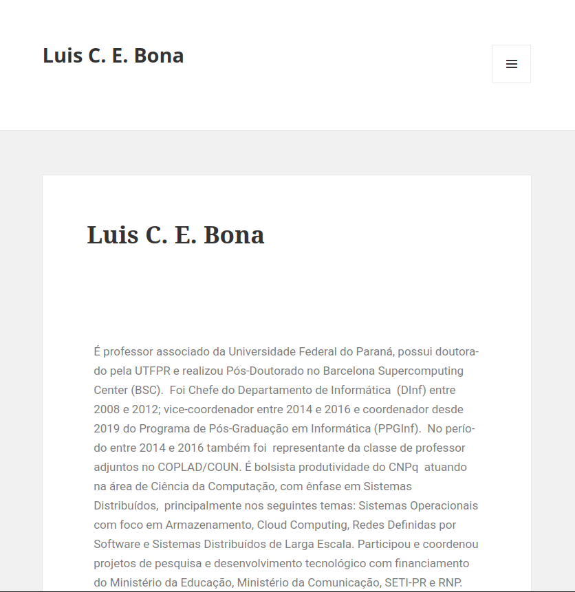
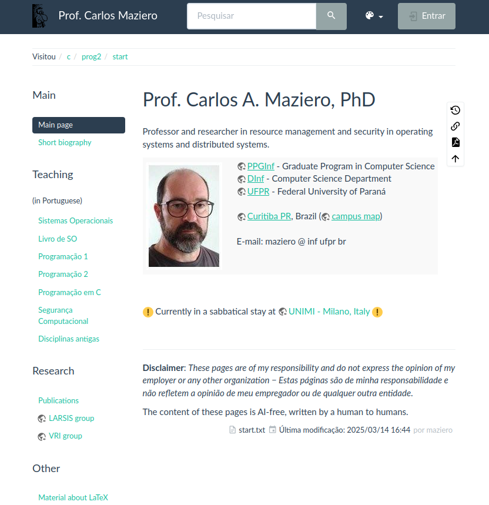
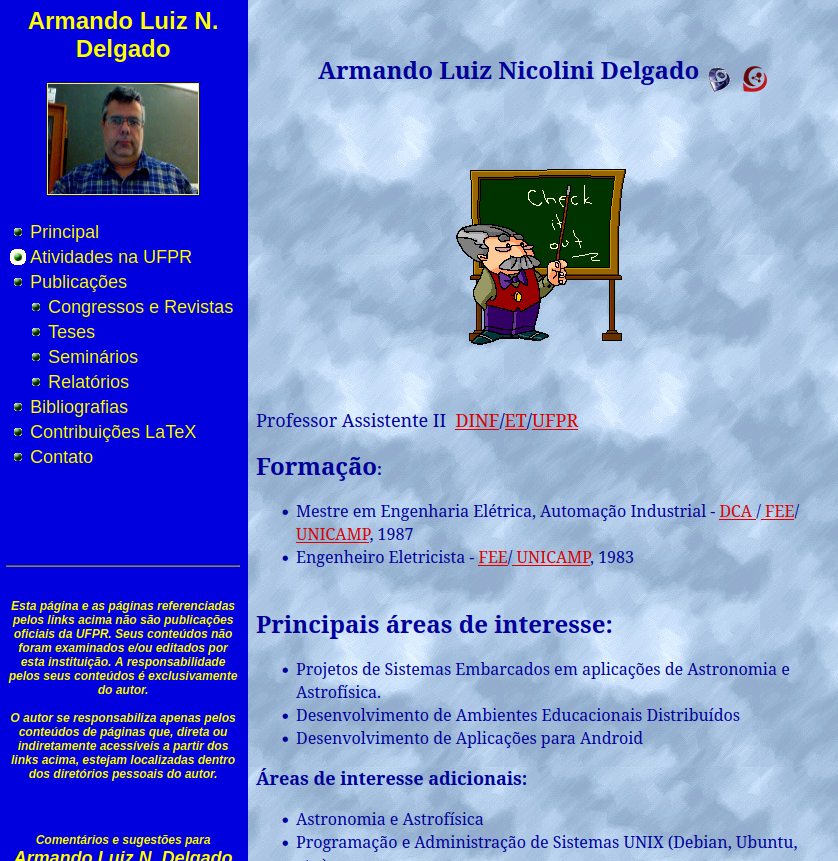
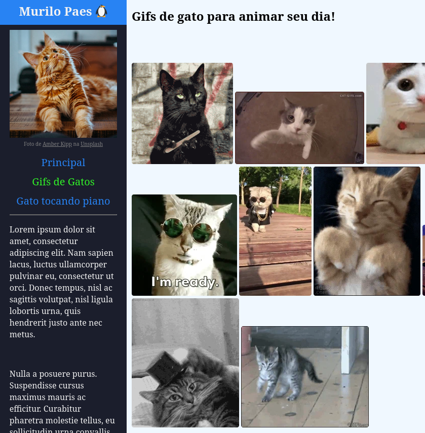

Professor
Ah os professores, nossos companheiros durante as aulas, como tutores em nossas pesquisas, nos TCCs e até nas pós eles não saem dos nossos lados.
Mas e na web? Será que eles estão presentes? E será que essa presença é digna de um Sereja Award?
Confira nossos doutores nomeados!

E os nomeados são:
Alexandre Direne
Que saudades! As inúmeras premiações e homenagens a ele, incluindo o nome do nosso centro acadêmico (CAAD), são prova de que ele era um ser humano incrível e muito amado pela comunidade do departamento.
Seu site é em HTML puro, sem CSS, mas não deixa de ser recheado de conteúdo. O que mais nos chamou atenção, foram as recomendações de leitura ao final da página. Apesar de ser um curso de exatas, não podemos sair da educação superior sem noção do nosso cenário político e nossa posição no mesmo, e Direne sabia disso.
Bona
Bem minimalista, o tonzinho de creme dando um ar de aconchego tal qual as páginas de um bom livro. E é pelos livros que o Bona ganhou sua indicação, nada como uma boa leitura fora da computação após um longo dia dentro da computação.
Maziero
QUE PILAR DA PRÉ-BARREIRA, SENHORAS E SENHORES. O GIGANTE, nosso ex-coordenador que está hoje perambulando as ruas da europa em busca de mais conhecimento.
Ele desenvolveu na sua página uma wiki completíssima para auxiliar os alunos nas disciplinas que ele ministra. Não posso opinar quanto a SO e Segurança, mas nas disciplinas de prog 1 e 2 eu citava essa wiki toda a semana. Com certeza o site de maior utilidade dentre todos os dos professores.
Armando
O puro suco do web design. Última modificação 2018?? Você não nos engana, Armando, essa página não passa de 2009.
Alguns amam, outros odeiam, eu acho que amassa qualquer HTML cru.
e por fim...
Renato
QUE COISA MAIS FOFAA!!! Fala se a sua experiência universitária não seria absolutamente elevada se todos os professores tivessem um site desse jeitinho.
Ele traz nostalgia, traz fofura, traz informação, traz fotos importantes e tudo mais!!!

Quantos sites maravilhosos, apesar de serem Prog. Web. Mas só pode haver um vencedor.
O melhor site Prog. Web do DINF é...